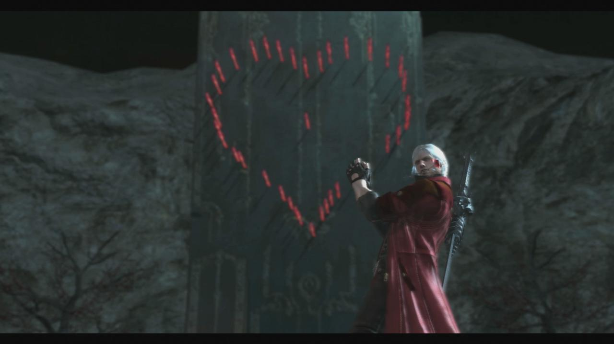
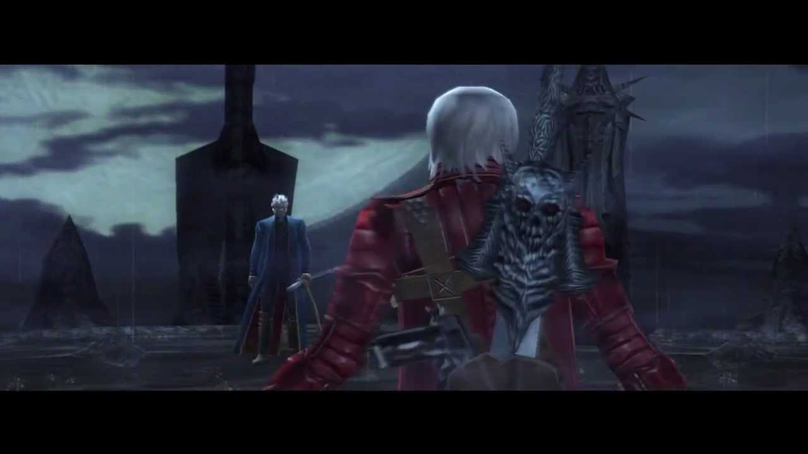
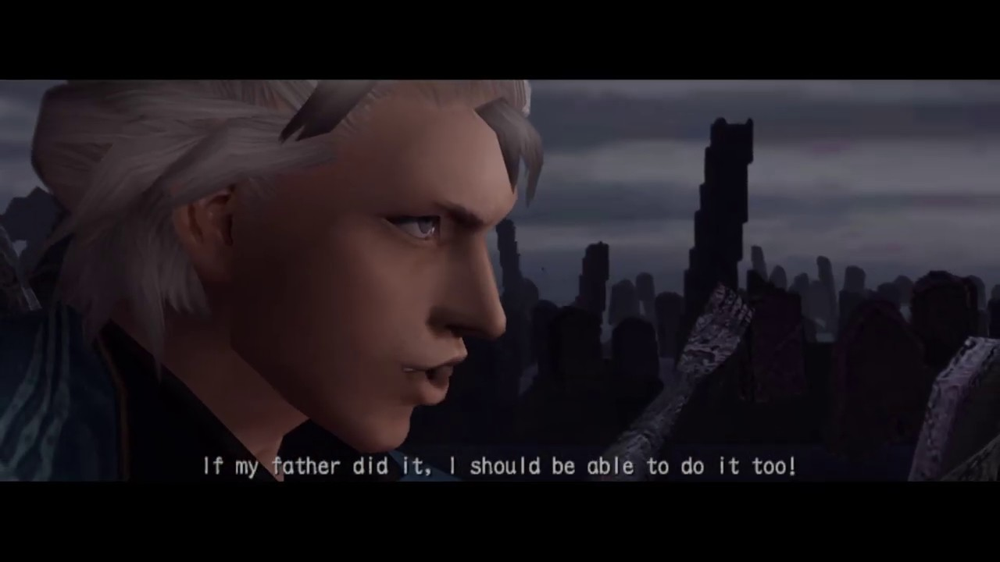

Dante Lucifer
Dante usando Lucifer para destruir una de las puertas demoníacas después de derrotar a Berial

Dante vs Vergil
Primer Encuentro entre Dante y Vergil en la torre de Temen Ni Gru

Vergil Cae
Imágenes de Vergil a punto de retar al emperador demonio Mundus luego de perder ante Dante